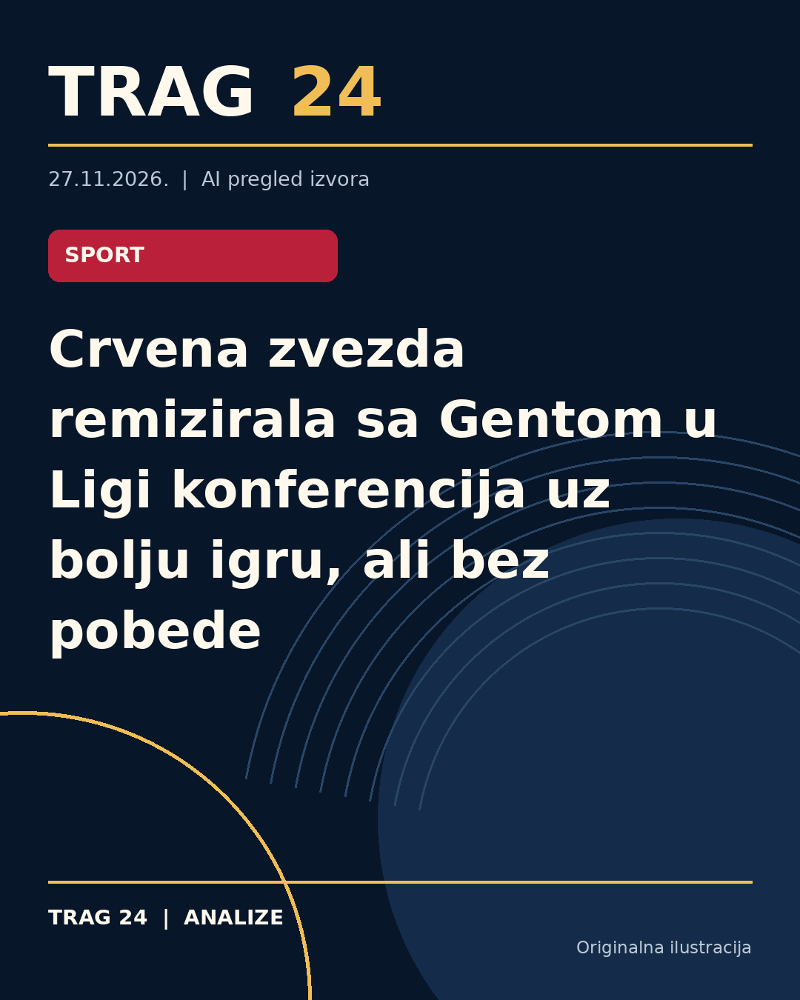

Crvena zvezda remizirala sa Gentom u Ligi konferencija uz bolju igru, ali bez pobede

ŠTA SE DOGODILO
Fudbaleri Crvene zvezde odigrali su nerešenih 1:1 na gostovanju kod belgijskog Genta u okviru četvrtog kola Lige konferencija. Crveno-beli su dominirali posedom, naročito u prvih 15 minuta utakmice, ali nisu uspeli da iskoriste stvorene prilike. Gent je poveo golom Tijaga Arauha, dok je Crvena zvezda do izjednačenja stigla golom defanzivca Mateja Gaštarova u 86. minutu.
HRONOLOGIJA
Zvezda je u uvodnom delu imala posed lopte od 84% i kreirala nekoliko prilika preko Vladimira Lučića, ali nije postigla gol. Gent je prvu ozbiljniju šansu imao u 20. minutu, a šest minuta kasnije Tijago Arauho je izjednačio na 1:0 posle kornera i odbijene lopte. Kasnije je Arauho postigao i gol poništen zbog ofsajda. Zvezda je u drugom delu utakmice izvršila izmene, ubacio Osman Bukarija i Mihaila Ristića, a u završnici je Gaštarov doneo bod udarcem u dalji ugao.
ŠTA NAVODE IZVORI
Vladimir Lučić je izjavio da mu više odgovara leva krilna pozicija zbog korišćenja dominantne noge i da smatra da je Zvezda bila bolja u svim segmentima igre, ostavši žal što nisu osvojili sva tri boda. Matej Gaštarov je golom spasao Zvezdu poraza, a u izjavama igrači ističu dominaciju u posed lopte i želju za pobedom. Trener Albert Rijera istakao je nezadovoljstvo realizacijom svoje ekipe uprkos dominaciji posedom u meču.
ŠTA JE POTVRĐENO
Utakmica je završena rezultatom 1:1. Zvezda je dominirala posed lopte tokom susreta, naročito u prvih 15 minuta. Gent je prvi postigao gol, dok je Zvezda uspela da se vrati preko Gaštarova. Nisu potvrđene tvrdnje o eventualnoj utakmici u narednim kolima ili promenama u ekipi vezanim za ovaj meč.
ŠTA NIJE POTVRĐENO
Nije potvrđeno da je Zvezda mogla lako da postigne golove ili da je Gent bio u defanzivi tokom celog meča. Izvori ne navode detalje o tome kako je Gent igrao ostale delove utakmice, kao i promene taktike tokom igre. Takođe, nije potvrđeno da će ekipa Zvezde odigrati sličnu ili drugačiju utakmicu u narednim susretima takmičenja.
ŠTA OSTАJE OTVORENO: Ostaje pitanje kako će Crvena zvezda iskoristiti ostale utakmice Lige konferencija s obzirom na želju i dominaciju izraženu u ovom meču koji nije rezultirao pobedom. Takođe, ostaje nepoznato kako će se trener Rijera prilagoditi ekipi da poboljša realizaciju i obradu prilika u narednim utakmicama.
Izvori
- https://www.novosti.rs/sport/fudbal/1675153/lucic-nakon-remija-zvezde-genta-bili-smo-bolji-svakom-segmentu-ostaje-zal-pobedom
- https://www.b92.net/sport/fudbal/evrokupovi/288485/gastarov-i-lucic-izjave-posle-gent-crvena-zvezda/vest
- https://www.espreso.co.rs/sport/fudbal/1632038/gent-crvena-zvezda-liga-konferencija-2026-27
Ova analiza je pripremljena uz pomoć veštačke inteligencije na osnovu javno dostupnih izvora. Navodi izvora nisu nužno nezavisno potvrđeni.